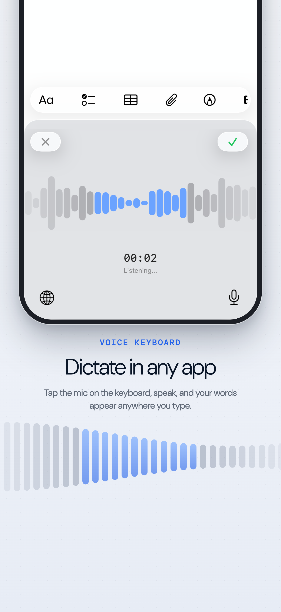
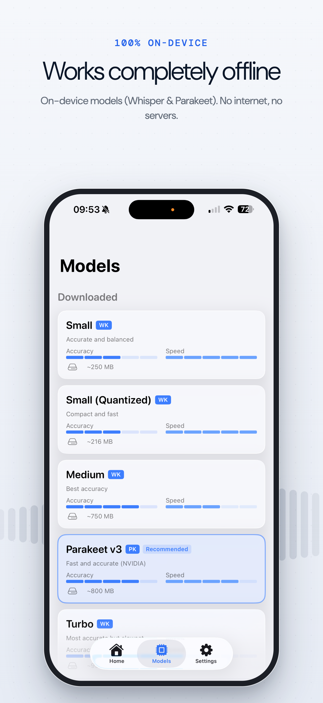
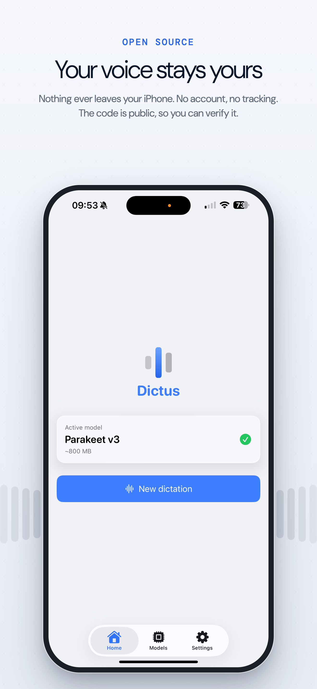
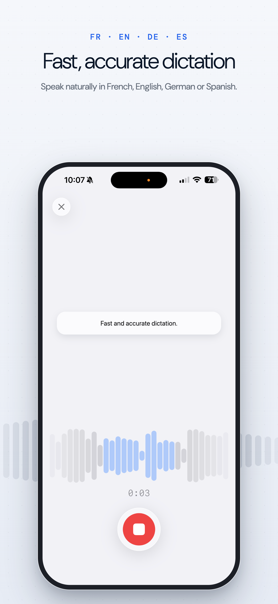
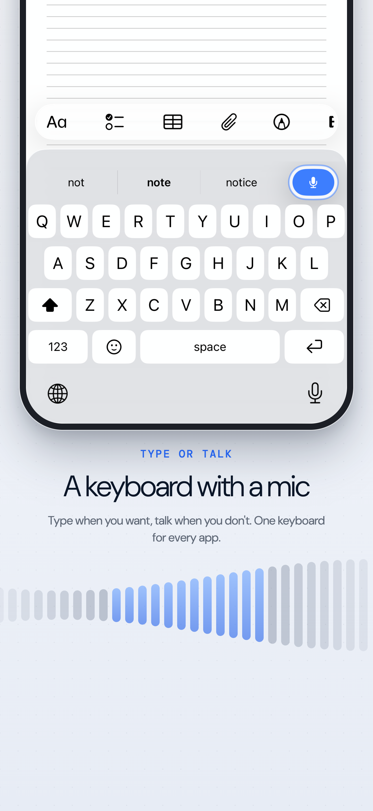

iPhone · gap 16px · coins arrondis comme sur l’App Store





Même galerie sur fond noir
Dans les résultats de recherche, seules ~3 captures apparaissent : les premières doivent porter le message